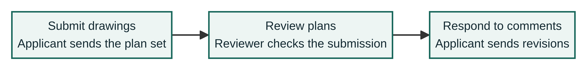

Visual comparison is shown. The corrected example includes a text equivalent.
Before / deliberately incomplete
A process inside an image
Use this guide to understand the review flow.

No process description was supplied in this synthetic example. The image has an empty alternative.
<img src="review-flow.png" alt="">The stages and their relationships exist only in the graphic. Treating it as decorative removes that information from the accessible image name.
After / equivalent information
The process is available in text
Use this guide to understand the review flow.
Image alternative: Plan-review flow: submit drawings, review plans, then respond to comments. Details follow.
- Submit drawings. The applicant sends the plan set.
- Review plans. The reviewer checks the submission.
- Respond to comments. The applicant sends revisions.
A concise alternative identifies the diagram. The nearby ordered list provides its complete information without relying on the image.
The real observation, kept narrow
On the public ProjectDox 9.4 help landing page, the image image205.png contains three product panels and descriptive text, but its rendered image element has alt="". Those panel descriptions are not supplied as equivalent nearby HTML text.
This is an image-alternative concern relevant to WCAG 1.1.1. It is not a full accessibility audit, a claim about the current application release, or a compliance verdict.
Scope and review notes
- Eight public URLs were attempted. Six public marketing/help pages rendered; two application-host HTTPS routes were blocked by certificate-date errors in the review browser.
- The authenticated workspace was not accessed. Its complete surface could not be enumerated.
- The account-guide screenshots were not promoted to a firm finding because surrounding instructions may supply an equivalent.
- A hidden utility link and an outer iframe outline were not used as proven keyboard defects.
- This original diagram is generic sample content. No Avolve code, logos, screenshots, or branding are used here.